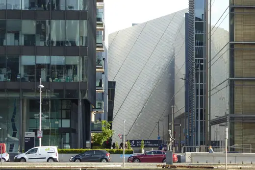
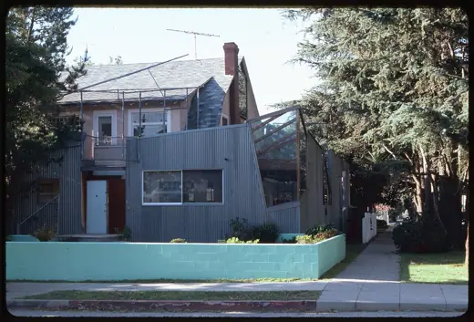
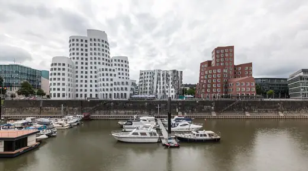

Buildings 71
Sort
 Eli and Edythe Broad Art Museum2012 · East Lansing
Eli and Edythe Broad Art Museum2012 · East Lansing Kunsthal1992 · Rotterdam
Kunsthal1992 · Rotterdam Biomuseo2014 · Panama City
Biomuseo2014 · Panama City European Central Bank2014 · Frankfurt
European Central Bank2014 · Frankfurt Musée des Confluences2014 · Lyon
Musée des Confluences2014 · Lyon Wexner Center for the Arts1989 · Columbus
Wexner Center for the Arts1989 · Columbus Military History Museum2011 · Dresden
Military History Museum2011 · Dresden Felix Nussbaum Haus1998 · Osnabrück
Felix Nussbaum Haus1998 · Osnabrück Danish Jewish Museum2004 · Copenhagen
Danish Jewish Museum2004 · Copenhagen Ufa-Kristallpalast1998 · Dresden
Ufa-Kristallpalast1998 · Dresden
Bord Gais Energy Theatre2010 · Dublin Fisher Center for the Performing Arts2003 · Annandale-on-Hudson
Fisher Center for the Performing Arts2003 · Annandale-on-Hudson Jewish Museum Berlin2001 · Berlin
Jewish Museum Berlin2001 · Berlin Jay Pritzker Pavilion2004 · Chicago
Jay Pritzker Pavilion2004 · Chicago Walt Disney Concert Hall2003 · Los Angeles
Walt Disney Concert Hall2003 · Los Angeles Contemporary Jewish Museum2008 · San Francisco
Contemporary Jewish Museum2008 · San Francisco
Gehry Residence1978 · Santa Monica Museum of Pop Culture2000 · Seattle
Museum of Pop Culture2000 · Seattle Caltrans District 7 Headquarters2004 · Los Angeles
Caltrans District 7 Headquarters2004 · Los Angeles Rosenthal Center for Contemporary Art2003 · Cincinnati
Rosenthal Center for Contemporary Art2003 · Cincinnati Frederic C. Hamilton Building, Denver Art Museum2006 · Denver
Frederic C. Hamilton Building, Denver Art Museum2006 · Denver
Neuer Zollhof1998 · Düsseldorf Imperial War Museum North2002 · Manchester
Imperial War Museum North2002 · Manchester Steinhaus2008 · Steindorf am Ossiacher See
Steinhaus2008 · Steindorf am Ossiacher See Vitra Fire Station1993 · Weil am Rhein
Vitra Fire Station1993 · Weil am Rhein BMW Welt2007 · Munich
BMW Welt2007 · Munich Fondation Louis Vuitton2014 · Paris
Fondation Louis Vuitton2014 · Paris DZ Bank Building2001 · Berlin
DZ Bank Building2001 · Berlin Graduate House, University of Toronto2000 · Toronto
Graduate House, University of Toronto2000 · Toronto Bergisel Ski Jump2002 · Innsbruck
Bergisel Ski Jump2002 · Innsbruck 8 Spruce Street2011 · New York
8 Spruce Street2011 · New York parc de la Villette1987 · Paris
parc de la Villette1987 · Paris Weisman Art Museum1993 · Minneapolis
Weisman Art Museum1993 · Minneapolis 41 Cooper Square2009 · New York
41 Cooper Square2009 · New York Phaeno Science Center2005 · Wolfsburg
Phaeno Science Center2005 · Wolfsburg IAC Building2007 · New York
IAC Building2007 · New York Vitra Design Museum1989 · Weil am Rhein
Vitra Design Museum1989 · Weil am Rhein Dancing House1996 · Prague
Dancing House1996 · Prague Igualada Cemetery1994 · Igualada
Igualada Cemetery1994 · Igualada LUMA Arles Tower2021 · Arles
LUMA Arles Tower2021 · Arles Hotel Marqués de Riscal2006 · Elciego
Hotel Marqués de Riscal2006 · Elciego Michael Lee-Chin Crystal, Royal Ontario Museum2007 · Toronto
Michael Lee-Chin Crystal, Royal Ontario Museum2007 · Toronto Ray and Maria Stata Center (MIT Building 32)2004 · Cambridge
Ray and Maria Stata Center (MIT Building 32)2004 · Cambridge Busan Cinema Center2011 · Busan
Busan Cinema Center2011 · Busan Dr Chau Chak Wing Building2015 · Sydney
Dr Chau Chak Wing Building2015 · Sydney Federation Square2002 · Melbourne
Federation Square2002 · Melbourne Opus Hong Kong2012 · Hong Kong
Opus Hong Kong2012 · Hong Kong